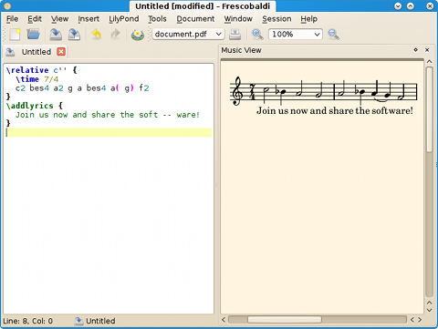

Manuel de Frescobaldi
Frescobaldi est un éditeur léger et puissant pour les partitions musicales LilyPond. Ce manuel est écrit par Wilbert Berendsen et documente Frescobaldi version 2.0.5.
Traduit par Valentin Villenave, David Bouriaud, Ryan Kavanagh, Raphaël Doursenaud et Philippe Massart.
Comment obtenir de l'aide dans Frescobaldi
Dans la plupart des fenêtres de dialogue, vous pouvez cliquer sur un bouton Aide ou appuyer la touche F1. La plupart des éléments d'interface ont aussi une information « Qu'est-ce que c'est ? » qui peut être affichée en appuyant Shift+F1 ou en sélectionnant Aide→Qu'est-ce que c'est ?.
Table des matières
- Introduction
- Démarrage
- L'assistant de partition
- The Music View
- Autres outils
- Le panneau d'insertion rapide
- Fragments
- Manipulation des hauteurs
- Manipulation rythmique
- Paroles
- L'éditeur
- Préférences
- Préférences générales
- Préférences de LilyPond
- Réglages MIDI
- Applications auxiliaires
- Emplacements
- Documentation LilyPond
- Raccourcis clavier
- Polices et couleurs
- Outils
- Troubleshooting
- À propos de Frescobaldi
- Table des matières
Introduction
⬀LilyPond est un logiciel libre de gravure musicale qui produit des partitions de très haute qualité à partir de fichiers textes d'entrés relativement simples. Ces fichiers textes peuvent être créés avec n'importe quel éditeur de texte. LilyPond charge alors le fichier texte et sort une magnifique gravure, par défaut au format PDF.
Frescobaldi est un application conçue pour rendre l'édition de partitions musicales LilyPond plus facile et plus rapide. Vous devez cependant apprendre d'abord le langage de saisie de LilyPond. Si vous lisez la section Démarrage de ce Guide de l'Utilisateur, vous verrez aussi certaines bases de LilyPond.
Vous pourrez alors continuer à apprendre en vous servant du Manuel d'Initiation de ⬀l'excellente documentation en ligne de LilyPond.
Démarrage
L'écran par défaut de Frescobaldi montre un document texte sur la gauche et un aperçu musical vide sur la droite.
Maintenant, dans l'éditeur de texte, saisissez un peu de code LilyPond, comme ceci :
\relative c'' { \time 7/4 c2 bes4 a2 g a bes4 a( g) f2 } \addlyrics { Join us now and share the soft -- ware! }
Cliquez ensuite le bouton LilyPond ou appuyez Ctrl+M. Si tout se déroule normalement, LilyPond démarre et compile votre fichier. Au bas de l'écran, vous pouvez suivre la progression de LilyPond. Si LilyPond ne rencontre aucune erreur de votre part, il produira un fichier PDF qui sera affiché dans l'aperçu :
h
L'aperçu offre de nombreuses possibilités :
- Survoler des notes ou autres objets les surlignera dans le texte ; cliquez des objets pour déplacer le curseur de texte vers leur emplacement.
- Ctrl-molette change le zoom. Le zooming centrera la vue sur le pointeur de la souris.
- Ctrl-clic à un endroit vide fait apparaître une loupe.
- Déplacer le curseur de texte ou sélectionner du texte surligne les notes dans l'aperçu ; appuyez Ctrl+J pour center explicitement et surligner une note ou un autre objet dans l'aperçu.
- Maj-glissez une sélection et appuyez Ctrl+Shift+C ou Édition→Copier vers une image... pour copier la musique sélectionnée comme image vers le presse-papiers, un fichier ou une autre application.
Si votre partition est terminée, il est recommandé de lancer LilyPond une fois de plus en désactivant les notes cliquables : menu LilyPond→Graver (publication). Les fichiers PDF seront plus petits.
Si LilyPond ne démarre pas du tout, vérifiez que vous avez correctement installé LilyPond et que la commande lilypond se trouve bien dans la variable PATH de votre système. Si nécessaire, précisez l'emplacement exact de votre exécutable LilyPond dans Édition→Préférences→Préférences de LilyPond.
Si LilyPond rencontre des erreurs dans votre document, elles seront affichées dans le journal, et Frescobaldi marquera les lignes de votre document où se trouvent les erreurs. Cliquer sur une erreur dans le journal ou appuyer Ctrl+E immédiatement place le curseur de texte à l'emplacement fautif. En appuyant à nouveau Ctrl+E, le curseur se déplacera à l'erreur suivante, et ainsi de suite. Et relançant LilyPond, les marques d'erreurs seront supprimées. Vous pouvez supprimer ces marques d'erreurs manuellement en utilisant l'option Affichage→Effacer tous les repère d'erreur.
L'assistant de partition
L'assistant de réglages de partition (Ctrl+Shift+N) dans Outils→Nouvelle partition... est conçu pour configurer rapidement une partition LilyPond.
Dans le premier onglet, Titres et en-têtes, vous pouvez saisir les informations de titrage.
Dans le second onglet, Parties, vous pouvez composer votre partition en choisissant parmi les types de parties disponibles. Double-cliquez un type de partie pour l'ajouter à la partition (ou cliquez Ajouter). Sélectionnez la partie dans la liste pour modifier certains réglages pour la partie sélectionnée si nécessaire. De nombreuses parties, particulièrement dans les chœurs, disposent de nombreuses options pour régler la partition de façon personnalisée.
Dans le troisième onglet, Réglages de partition, les propriétés globales de la partition et les préférences peuvent être définies.
Cliquez sur le bouton Aperçu pour obtenir un aperçu avec quelques exemples musicaux. Cliquez Ok pour copier le code LilyPond généré dans l'éditeur de texte.
Pièces multiples ou mouvements
Une fonction spéciale et puissante de l'onglet Parties est caché dans la catégorie « Contenants » de la liste des types de parties.
Cette catégorie contient les types Score, Book et Bookpart, avec lesquels vous pouvez configurer un document LilyPond contenant plusieurs partitions ou livres. Vous pouvez ajouter des entrées Score, Bookpart ou Book dans l'éditeur de partition. Elles peuvent être imbriquées : un Score peut être ajouté à un Bookpart ou Book mais vous ne pouvez pas ajouter un Book à un Bookpart ou un Score.
Ensuite, vous pouvez ajouter les parties musicales. Si vous voulez créer plusieurs partitions avec les mêmes parties, vous pouvez simplement ajouter les parties en début de vue de partition, et ensuite les partitions, sans ajouter les parties musicales dans les partitions. Les partitions utiliseront alors les parties en début de partition.
The Music View
The Music View displays the PDF document created by LilyPond.
When LilyPond was run in preview mode (i.e. with Point & Click turned on), the PDF contains a clickable link for every music object, pointing to its definition in the text document.
The Music View uses this information to provide smart, two-way integration with the text document:
- Move the mouse pointer over music objects to highlight them in the text
- Click an object to move the text cursor to that object
- Shift-click an object to edit its text in a small window (see Edit in Place)
- Move the text cursor to highlight them in the music view, press Ctrl+J to scroll them into view.
You can also adjust the view:
- Use the Control (or Command) key with the mouse wheel to zoom in and out
- Hold Control or Command and left-click to display a magnifier glass
- Configure the background color under Édition→Préférences→Polices et couleurs→Couleurs de base→Arrière-plan de l'aperçu
You can copy music right from the PDF view to a raster image: Hold Shift and drag a rectangular selection (or use the right mouse button) and then press Ctrl+Shift+C or select Édition→Copier vers une image... to copy the selected music as a raster image to the clipboard, a file or another application.
Voir aussi : Edit in Place, After engraving a score, the Music View does not show the music
Autres outils
D'autres outils importants sont listés ici.
Le panneau d'insertion rapide
Avec les outils du panneau d'insertion rapide, vous pouvez ajouter divers éléments musicaux à la note actuelle ou à la musique sélectionnée.
Le sélecteur de Direction définit si les articulations, dynamiques ou liaisons
apparaissent en position neutre (p. ex. déterminée par la direction de la hampe de note),
au-dessus ou en-dessous de la portée en insérant un caractère -, ^ ou
_.
Cliquez sur l'onglet pour choisir un outil. Vous pouvez voyager d'un outil à l'autre avec la touche Ctrl (ou ⌘) et la molette de la souris. Tous les boutons du panneau d'insertion rapide ont un raccourci clavier configurable; vous pouvez le modifier par un clic-droit sur un bouton.
Articulations
Ces symboles musicaux peuvent être ajoutés à une note, un silence ou une sélection musicale. Si vous les appliquez à une sélection, les silences ne seront pas pris en compte. Si aucun texte n'est sélectionné, le curseur ira automatiquement au prochain son, silence, espace ou accord.
Si Autoriser les raccourcis est coché, Frescobaldi utilisera les signes abrégés
pour les articulations s'ils existent
(p. ex. -. au lieu de -\staccato).
Nuances
Les nuances peuvent être ajoutées à une note ou un silence. Si vous sélectionnez une région musicale, vous pouvez ajouter une indication continue qui s'arrêtera automatiquement à la derrière note, silence ou accord de la sélection. Si vous choisissez ensuite un signe, il remplacera la terminaison.
Indications étendues
Cet outil permet d'ajouter des arpeggios, glissandos et d'autres indications étendues, telles que des liaisons, liaisons de phrasé, ligatures manuelles ou trilles.
Les arpeggios et glissandos s'appliquent à la note courante; aucune musique ne peut être sélectionnée. Les liaisons, ligatures ou trilles s'appliquent à la note courante et à la suivante si aucune musique n'est sélectionnée, ou à la première et dernière note ou accord de la sélection.
Barres de mesures
Vous pouvez insérer des barres de mesures ou divers signes de respirations.
Fragments
Le gestionnaire de fragmens vous permet de conserver des fragments de texte fréquemment utilisés et de les coller facilement dans l'éditeur de texte.
Le gestionnaire de fragments peut être activé via le menu Insérer→Fragments... ou par le raccourci Ctrl+T.
Les fragments sont recherchables en navigant dans la liste ou en saisissant quelques caractères dans le champ de recherche. Les fragments peuvent également être appliqués par un raccourci clavier. Certains fragments ont un nom spécifique que vous pouvez saiser dans le champ de recherche. Il suffit ensuite de valider avec Entrée pour appliquer le fragment dans l'éditeur de texte et de masquer le gestionnaire de fragments.
Ajoutez de nouveaux fragments avec Ins. Éditez le fragment sélectionné avec F2. Supprimer les fragments sélectionnés avec Ctrl+Del. Attention : impossible d'annuler !
Les fragments peuvent également être placés dans le menu (voir Éditeur de fragments). Il y a aussi des fragments pouvant inclure ou modifier du texte sélectionné. Certains fragments utilisent pour cela des variables spéciales, d'autres sont de petits scripts écrits en Python.
Éditeur de fragments
Vous pouvez ici éditer le texte du fragment.
Si vous commencez la (les) première(s) ligne(s) avec '-*- ' (notez les espaces), le rappel de cette ligne définit des variables comme name: value; ou simplement name;, ce qui influence le comportement du fragment. Les variables suivantes peuvent être utilisées :
menu- Placer le fragment dans le menu Insérer groupé par la valeur (optionnelle).
template- Place le fragment dans le menu Fichier→Nouveau d'après un modèle, groupé par valeur (optionnelle). Quand il est utilisé via le menu, le fragment est inséré dans un nouveau document.
name- Mnémonique à saisir pour sélectionner le fragment.
indent: no;- Ne pas indenter automatiquement le fragment après insertion.
icon- Le symbole à afficher dans le menu et la liste de fragments.
symbol- Le symbole à afficher dans le menu et la liste de fragments. Les symboles sont des icônes qui utilisent la couleur de texte par défaut et se trouvent dans le dossier 'frescobaldi_app/symbols'.
python- Exécuter le fragment comme un script Python. Voir Fragments Python.
selection- Un ou plusieurs des mots suivants (séparés par des espaces ou des virgules) :
yes: Nécessite du texte pour être sélectionné.strip: Ajuste la sélection afin de ne pas inclure les espaces de début et de fin.keep: Sélectionne tout le texte inséré.
Les autres lignes du fragment définissent le texte à insérer dans l'éditeur. Ici, vous pouvez insérer des variables précédées d'un caractère $. Un double $ sera remplacé par un simple. Les variables suivantes sont reconnues :
$ANCHOR- Sélectionne le texte d'ici jusqu'à la position donnée par la variable
$CURSOR $CURSOR- Déplace le curseur de texte après l'insertion.
$DATE- La date du jour au format AAAA-MM-JJ.
$DOCUMENT_NAME- Le nom du document courant.
$FILE_NAME- Le nom local complet du document courant.
$FRESCOBALDI_VERSION- La version de Frescobaldi.
$LILYPOND_VERSION- La version du programme LilyPond par défaut.
$SELECTION- Le texte sélectionné si disponible. Sinon, le curseur de texte est déplacé ici.
$URL- L'URL du document courant.
Fragments Python
Les fragments Python peuvent lire et définir la variable text. La variable text contient le texte actuellement sélectionné (qui peut être une chaîne vide).
Vous pouvez définir text comme chaîne ou liste de chaînes.
Autres variables qui peuvent être référencées :
state- Une liste de chaînes de caractères décrivant le type de texte sur lequel le curseur se trouve.
cursor- Le QTextCursor courant donne accès au document. Cependant, ne changez pas le document au moyen du curseur.
CURSOR- En définissant
textcomme une liste plutôt qu'une chaîne, vous pouvez utiliser cette valeur pour spécifier la place que le curseur de texte occupera après l'insertion du fragment. ANCHOR- En définissant
textcomme une liste plutôt qu'une chaîne, cette valeur peut être utilisée conjointement auCURSORpour sélectionner du texte lors de l'insertion des morceaux de chaînes de la liste. main- When you define a function with this name, it is called without arguments, instead of inserting the text from the
textvariable. In this case you may alter the document through thecursor.
Maintaining a library of snippets
To keep a certain group of snippets manageable as a snippet library, you can of course prefix the snippet titles with some sort of special name. But a smarter way is to use a snippet variable.
It is suggested to use the "set" variable, and set it to the name of the library you want the snippet to belong to.
Then in the snippet manager, you can easily select all the snippets belonging to the library by entering :set name in the snippet search bar, where "name" is the name you want to use. And then e.g. export the snippets to an XML file for sharing the snippets with others.
Importing and exporting snippets
Snippets can be imported from and exported to XML files.
To export snippets, either select them in the snippet manager, or filter the snippets using the search bar and select none, so that all the snippets visible in the snippet manager are exported. Export the snippets by selecting Menu→Exporter, and then choose a file name, preferably ending in .xml.
To import snippets, select Menu→Importer and choose the file you want to import. You may also drop an XML file on the snippet manager. A dialog will be displayed where you can select which snippets you want to import.
The XML format of the snippet library files is simple and documented inside the XML file.
Manipulation des hauteurs
Frescobaldi propose des fonctions de manipulation des hauteurs, toutes situées dans le menu Outils→Hauteur :
- Langue des hauteurs
- Cette fonction traduit les hauteurs dans tout le document ou une sélection.
- Convertir musique relative vers absolue
-
Cette fonction convertit toute musique
\relativeen hauteurs absolues. Cela enlève, mais respecte, les vérifications d'octave. - Convertir musique absolue vers relative
-
Vérifie toutes les expressions musicales haut niveau, en le changeant en mode
\relativedès qu'une expression contient une hauteur. Si vous désirez rendre des sous-expressions séparées relatives, il peut s'avérer nécessaire de sélectionner la musique de la première expression, en laissant en dehors les accolades du niveau supérieur.
Transposer
En transposant de la musique, deux hauteurs absolues doivent être spécifiées pour définir l'intervalle de transposition. Des hauteurs peuvent inclure des marques d'octaviation. Les hauteurs doivent être saisies dans la langue de hauteurs utilisée dans le document.
La musique sera ensuite transposée depuis la première hauteur vers la deuxième,
comme la commande LilyPond \transpose le ferait.
P. ex. pour transposer d'une tierce mineure vers le haut, il faudrait saisir :
do mib
Pour transposer d'une seconde majeure vers le bas, vous pouvez saisir :
do sib,
ou
re do
Il est également possible d'utiliser la fonction de transposition pour changer une pièce de musique de do dièse vers ré bémol, ou de définir des quarts de tons si cela est accepté dans la langue utilisée pour les hauteurs de notes.
La fonction de transposition peut transposer des musiques en modes relatif ou absolu, en gérant correctement les armures, modes d'accords et vérifications d'octave.
Manipulation rythmique
Les fonctions de rythme de Frescobaldi modifient les durées écrites après les notes, accords, silences, etc. En utilisant ces fonctions, toutes présentes dans le menu Outils→Rythme, il est possible de doubler ou diviser par deux la longueur des notes, d'ajouter ou supprimer les points et de supprimer des facteurs d'échelle.
Il est également possible de changer la façon dont le rythme est spécifié : pour chaque note (explicite), ou seulement quand les durées changent (implicite). Certaines personnes prefèrent l'option implicite par ligne, qui spécifie toujours la durée pour la première note, le premier accord ou silence d'une ligne.
Les trois dernières commandes permettent de copier, coller ou appliquer un rythme qui est saisi dans un dialogue.
Dans le dialogue « Appliquer un rythme » vous pouvez saisir une série de durées, p. ex. :
4. 8 4 16 16 8 2
qui sera alors, de façon répétitive, appliquée à une sélection de notes.
Paroles
Frescobaldi peut placer automatiquement des césures « -- » dans un texte pour le rendre
utilisable comme paroles.
Frescobaldi peut utiliser les dictionnaires de césure d'OpenOffice.org, Scribus, etc.
Pour utiliser cette fonction, vous devez d'abord sélectionner le texte à traiter. Ensuite appuyez Ctrl+L ou choisissez Outils→Paroles. Dans la fenêtre de dialogue qui apparaît, sélectionnez la langue. Appuyez Ok ou appuyez Entrée pour effecter la césure.
Une petite limitation est que les dictionnaires de césure d'un traitement de texte couperont
rarement un mot juste après la première lettre (p. ex. « a -- men »), parce que ce
n'est pas beau dans un texte traité avec ce type de logiciel. Ainsi, il est possible que
vous deviez ajouter quelques césures après la première lettre dans les paroles.
Il existe également une commande pour supprimer la césure. Cela peut s'avérer utile si vous avez une strophe de paroles que vous désirez seulement afficher sous la musique. Sous le menu Édition→Préférences, vous pouvez saisir la liste des dossiers où rechercher les fichiers de césure.
L'éditeur
Dans cette partie sont présentées les fonctionnalités de l'éditeur, parmi lesquelles le contrôle de l'indentation automatique, l'utilisation de la recherche et remplacement etc.
Recherche et remplacer
Dans le menu Édition se trouvent les commandes Rechercher (Ctrl+F) et Remplacer (Ctrl+H), ouvrant une petite fenêtre dans le bas de l'éditeur. Il est possible de rechercher du texte ou des expressions rationnelles.
Les expressions rationnelles sont des textes de recherche avancés contenant des caractères qui peuvent correspondre à plusieurs caractères dans le document. En remplaçant le texte, il est également possible de faire référence à des parties du texte recherché écrites entre parenthèses.
Dans le mode de recherche en expression rationelle, certains caractères ont une signification particulière :
*- correspond au précédent caractère ou groupe, aucune ou plusieurs fois
+- correspond au précédent caractère ou groupe, une ou plusieurs fois
?- correspond au précédent caractère ou groupe, aucune ou une fois
[ ]- correspond à un des caractères contenus
( )- groupe caractères. Ceci enregistre également les textes correspondants dans le groupe.
En remplaçant, vous pouvez utiliser des caractères comme
\1,\2etc., pour écrire le texte du groupe de texte de remplacement correspondant. \\ \n \t \s \d \w- correspondent respectivement à un antislash, une nouvelle ligne, une tabulation, un caractère d'espace, un nombre, un caractère textuel générique.
Des informations plus complètes concernant les expressions rationnelles se trouvent dans ⬀la documentation Python.
Variables de document
Les variables de document sont des variables qui influencent le comportement de Frescobaldi.
Elles peuvent être écrites dans les cinq premières ou derrières lignes d'un document.
Si une ligne contient « -*- », Frescobaldi recherche le reste des
lignes de définitions de variable comme name: value;.
Les variables suivantes sont reconnues :
mode: mode;- Force un mode parmi les suivants : lilypond, html, texinfo, LaTeX, docbook ou scheme. Par défaut : reconnaissance automatique du mode.
master: Nom de fichier;- Compile un autre document LilyPond au lieu du document en cours.
output: name;- Looks for output documents (PDF, MIDI, etc.) starting with the specified name or comma-separated list of names. More information.
coding: encodage;- Utiliser un autre encodage que l'encodage par défaut UTF-8.
version: version;- Définit la version de LilyPond à utiliser ; elle peut être utilisée pour des documents non-LilyPond.
tab-width: Nombre;- La largeur d'une tabulation, par défaut 8 espaces.
indent-tabs: yes/no;- Utilisation de tabulations pour l'indentation. Par défaut :
no. document-tabs: yes/no;- Utilisation de tabulations n'importe où dans le document. Par défaut :
yes. indent-width: Nombre;- Nombre d'espaces utilisé par chaque niveau d'indentation. Par défaut : 2.
Vous pouvez placer des variables de document dans les commentaires.
The "output" document variable
Setting this variable suppresses the automatic output file name determination and makes Frescobaldi look for output documents (PDF, MIDI, etc.) with the specified basename, or comma-separated list of names.
If a name ends with a directory separator, output files are looked for in the specified directory.
All names are relative to the document's filename.
For example:
\version "2.14.2" % -*- output: pdfs/; \book { \bookOutputName #(string-append "pdfs/" some-variable) \score { \relative c' { c d e f g } } }
You can set this variable if the automatic output file name determination would be time-consuming (as Frescobaldi parses the document and all the documents it includes, searching for the LilyPond commands that specify the output name, such as \bookOutputName, etc); or when the automatic output file name determination does not work due to complicated LilyPond code.
Sessions
Une session est une liste de fichiers ouverts. À n'importe quel moment vous pouvez choisir Session→Enregistrer ou Session→Nouveau et enregistrer la liste de fichiers ouverts vers une session.
Quand vous changez de session, tous les documents en cours sont d'abord fermés puis les documents de l'autre session sont ouverts.
Dans le dialogue des propriétés de session, vous pouvez choisir de toujours enregistrer la liste des documents ouverts dans cette session, ou d'enregistrer uniquement à la création (ou via Session→Enregistrer). Ceci peut être utile si vous désirez garder une liste identique de fichiers dans une session, même si vous ouvrez ou fermez des documents en cours de travail.
Vous pouvez également définir un dossier par défaut pour la session.
Voir aussi : Préférences générales
Préférences
Dans le dialogue Préférences (sous Édition→Préférences) vous pouvez configurer de nombreux aspects de Frescobaldi et LilyPond.
Préférences générales
Sous Préférences générales, vous pouvez choisir dans quelle langue l'interface utilisateur de Frescobaldi est traduite, quel style d'interface vous désirez utiliser, et si vous préférez utiliser les icones Tango incluses ou les par défaut pour votre système.
Le choix de langage et de style s'effectue immédiatement, mais le changement d'icones n'est effectif qu'après redémarrage de Frescobaldi.
Sous Session à charger si Frescobaldi est lancé sans arguments vous pouvez définir quelle session est chargée si Frescobaldi est lancé sans nom de fichier. Vous pouvez choisir de démarrer avec un document vide, avec la dernière session utilisée, ou avec une session définie. Voir aussi Sessions.
Sous Lors de l'enregistrement de documents, vous pouvez choisir que faire lorsqu'un document est enregistrée, comme se souvenir de la position du curseur, des lignes repérées, ou laisser une copie de sauvegarde du document (avec une extension ~). Vous pouvez également définir un dossier par défaut dans lequel vous rangez vos documents LilyPond.
Préférences de LilyPond
Ici vous pouvez configurer la manière dont LilyPond est lancé lorsque vous compilez votre document.
Si vous avez plusieurs versions de LilyPond installés, vous les pouvez spécifier ici, et configurer Frescobaldi pour automatiquement choisir la bonne, en fonction du numéro de version défini dans le document (Plus d'informations).
Vous pouvez également configurer la façon dont sera lancée Frescobaldi. Utilisez les info-bulles des réglages pour plus d'informations.
Enfin, vous pouvez définir une liste de chemins d'accès où la commande LilyPond \include cherchera des fichiers.
Réglages MIDI
Ici, vous pouvez configurer les réglages MIDI de Frescobaldi.
You can specify the MIDI port name to play to. S'il n'y a aucun nom de port visible dans le menu déroulant, il peut être nécessaire de connecter un synthétiseur MIDI matériel à votre ordinateur, ou de démarrer un synthétiseur logiciel tel que TiMidity ou Fluidsynth. Sous Linux, le synthétiseur devrait être disponible en tant que périphérique ALSA MIDI.
Si vous avez un périphérique avec plusieurs ports, vous pouvez spécifier les premières lettres du nom, pour que Frescobaldi choisisse automatiquement le premier disponible.
Et finalement, lorsque vous utilisez un synthétiseur logiciel, il est recommandé d'activer l'option Fermer les sorties MIDI non utilisées.
Si coché, Frescobaldi fermera les ports de sortie MIDI inutilisés depuis une minute.
Cela permet de libérer des ressources système qu'un synthétiseur logiciel MIDI pour utiliser, économisant ainsi de l'énergie.
Une conséquence est que si vous interrompez un fichier MIDI pendant un certain temps, les instruments sont réinitialisés au piano par défaut (instrument 0). Dans ce cas, rejouer le fichier depuis le début redéfinit correctement les instruments.
Applications auxiliaires
Vous pouvez saisir ci-dessous les commandes pour ouvrir divers types de fichiers. $f est remplacé par le nom du fichier, $u par l'URL. Laissez un champ vide pour utiliser l'application défaut du système d'exploitation.
Pour les réglages d'email, la commande doit acception une adresse mailto:. Pour la ligne de commande, la commande doit ouvrir une fenêtre de console. Une valeur $f sera remplacée par le dossier du document en cours.
Emplacements
Ici, il est possible d'ajouter des dossiers qui contiennent des fichiers hyph_*.dic où le caractère * sert pour les codes de différentes langues.
Les dictionnaires de césure sont utilisés par Frescobaldi pour séparer les textes des paroles en syllabes.
Documentation LilyPond
Vous pouvez ici ajouter les emplacements locaux ou URLs pointant vers la documentation de LilyPond. Un emplacement local doit pointer vers le dossier où se trouve soit le dossier « Documentation », soit l'emplacement complet « share/doc/lilypond/html/offline-root ».
Si ceux-ci ne sont pas trouvés, la documentation est cherchée dans tous les sous-dossiers de l'emplacement donné, un niveau plus loin. Il est alors possible de placer plusieurs versions de la documentation de LilyPond dans differents sous-dossiers et demander à Frescobaldi de les trouver.
Raccourcis clavier
Ici, vous pouvez ajouter des raccourcis clavier pour toutes les commandes disponibles. Les Fragments d'Insertion rapide qui ont un raccourci clavier sont listés ici.
Pour modifier un raccourci clavier, sélectionnez une action dans la liste et cliquez le bouton Éditer, ou double-cliquez sur l'action. Dans la boîte de dialogue qui apparaît, vous pouvez entrer jusqu'à quatre raccourci pour cette action en cliquant le bouton et en entrant le raccourci.
Vous pouvez définir un nouveau profil en utilisant le bouton Nouveau.
Polices et couleurs
Ici, vous pouvez définir la police de l'éditeur (une police à largeur fixe est recommandée) et toutes les couleurs.
Le premier élément vous permet de définir les couleurs pour l'arrière-plan, l'avant-plan, l'arrière-plan de sélection, la ligne courante, les lignes repérées, la couleur de papier de l'aperçu, etc.
Le deuxième élément vous permet de définir la couleur et d'autres attributs des styles généraux de colorisation syntaxique, p. ex. mot-clé, variable, valeur, commentaire, etc.
Les autres éléments contiennent les types de texte que la colorisation syntaxique de Frescobaldi reconnaît pour un type de document particulier. Certains de ces types héritent d'un style général. Il est possible de définir des attributs tels que gras, italique, souligné ainsi que la couleur d'avant-plan, d'arrière-plan et de soulignement.
Vous pouvez définir un nouveau profil en utilisant le bouton Nouveau.
Outils
Vous pouvez modifier les réglages pour différents outils.
Troubleshooting
Sometimes things don't go the way you would expect; this section may give some solutions.
After engraving a score, the Music View does not show the music
Does the
\scoreblock have a layout section?If a
\scoreblock has a\midisection but no\layoutsection, no PDF output is generated.Do you use an exotic way to specify the output filename?
Frescobaldi is able to determine the output file names by looking at the document's filename and the various LilyPond commands that specify the output filename or -suffix. Frescobaldi even searches
\includefiles for commands like\bookOutputNameand\bookOutputSuffix.But if you use more complicated Scheme code in your document to specify the output filenames, Frescobaldi may not be able to correctly determine those filenames.
In that case you can override the base name(s) using the
outputdocument variable.
Voir aussi : Variables de document
How to generate a MIDI file?
By default, LilyPond creates only a PDF file of the music. To create a MIDI file, you must wrap the music in a \score block and add a \midi block to it.
For example:
\version "2.14.2" music = \relative c' { c4 d e f g2 } \score { \music \layout {} \midi {} }
If you omit the \layout block, no PDF file will be generated, only a MIDI file.
À propos de Frescobaldi
Frescobaldi est nommé en honneur de ⬀Girolamo Frescobaldi (1583 – 1643), un compositeur et organiste Italien.
La page d'accueil de Frescobaldi est ⬀www.frescobaldi.org et une liste de diffusion est disponible sur frescobaldi@googlegroups.com (⬀plus d'infos).
Crédits
L'auteur principal de Frescobaldi est Wilbert Berendsen.
Frescobaldi est écrit en ⬀Python et utilise le toolkit ⬀Qt4.
L'aperçu est généré par la bibliothèque ⬀Poppler de Kristian Høgsberg, Albert Astals Cid et d'autres.
La plupart des icônes embarquées sont créées par ⬀Le Projet de Bureau Tango.
Frescobaldi est traduit dans les langues suivantes :
Braziliaans Portugees: Édio Mazera
Duits: Henrik Evers, Georg Hennig, Markus W. Kropp
Frans: Raphaël Doursenaud, Philippe Massart, Valentin Villenave, Yann Collette, David Bouriaud, Ryan Kavanagh
Galicisch: Manuel A. Vázquez
Italiaans: Gianluca D'Orazio
Nederlands: Wilbert Berendsen
Pools: Piotr Komorowski
Russisch: Sergey Poltavski, Artem Zolochevskiy
Spaans: Francisco Vila
Tsjechisch: Pavel Fric
Turks: Server ACİM
Contribuer
Frescobaldi est un ⬀Logiciel Libre visant à développer un éditeur de partitions LilyPond facile d'accès. Le but est de rendre Frescobaldi accessible sur les principales plate-formes.
Frescobaldi est développé sur un dépôt public GitHub : ⬀github.com/wbsoft/frescobaldi. Vous pouvez parcourir le code source et rendre compte de bogues et de vos remarques et souhaits.
Vous pouvez contribuer simplement en utilisant Frescobaldi et en rendant compte de bogues et suggestions. Les traductions sont bienvenues. La création de nouvelles traductions est expliquée dans le fichier README-translations dans la source de Frescobaldi. Si vous désirez ajouter des fonctionnalités, vous trouverez les informations concernant la structure du code source dans le fichier README-development.
Histoire de Frescobaldi
Frescobaldi puise ses racines dans LilyKDE, qui était un module externe pour Kate, l'éditeur de KDE3. LilyKDE était écrit en Python et a été publié à Noël 2007.
Lorsque KDE a développé la version 4, il n'était pas possible de développer directement des modules externes pour Kate en Python. LilyKDE est alors devenu une application indépendante, incluant la partie éditeur de texte de Kate, et a été renommé Frescobaldi. Frescobaldi utilisait encore Okular, partie de KDE, pour afficher les fichiers PDF. Frescobaldi 0.7 fut publié à Noël 2008. À Noël 2009, la version 1.0.0 fut publiée, et à Noël 2010 la version 1.2.0.
À ce moment, il fut décidé d'abandonner les librairies KDE4 et de n'utiliser que Python et Qt4 qui sont disponibles sur les platformes informatiques les plus courantes. Frescobaldi 2.0 est une ré-écriture complète. Sa publication est prévue pour Noël 2011.
Choisir automatiquement la version de LilyPond à partir du document
Si ce réglage est activé, le document est cherché pour une commande LilyPond \version ou une variable de document version.
La commande LilyPond version ressemble à ceci :
\version "2.14.0"
La variable de document ressemble à :
-*- version: 2.14.0;
quelque part (dans une section de commentaires) dans les premières ou dernières 5 lignes du document. De cette façon, la version LilyPond à utiliser peut également être spécifiée dans des fichiers non-LilyPond comme HTML, LaTeX, etc.
Si le document spécifie une version, la plus ancienne version LilyPond utilisable est choisie. Autrement, la version par défaut est choisie.
Voir aussi : Variables de document
Edit in Place
In this dialog you can edit one line of the text document.
Click OK or press Ctrl+Return to place the modified text in the document.
You can open the "Edit in Place" dialog by Shift-clicking a clickable object in the Music View or by right-clicking the object and selecting Edit in Place.
English, Nederlands, Español, Italiano, Český | Last Modified: 01 mei 2012